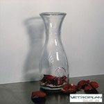
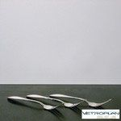
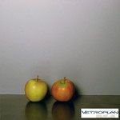
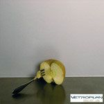
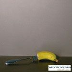
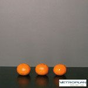
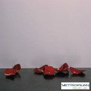

Vetroplan Steel Art Line
Die Vetroplan Steel Art Line – das sind metallische Farbtöne, die Sie in Verbindung mit anderen metallischen Elementen, wie z. B. Griffen oder Blenden, verwenden können.
Sie haben zudem die Möglichkeit, Ihren gewünschten Farbton auf unterschiedliche Materialstärken (6, 8, 10 und 12 mm) zu wählen.
Sie erhalten die Vetroplan Steel Art Line ausschließlich in Satinato-Oberflächen (matt), standardmäßig in unserem ESG-Glas.
Farbtöne
Alle Farben der Steel Art Line







Persönlich für Sie da
Lassen Sie sich beraten
Besuchen Sie unsere Ausstellung in Altbach oder rufen Sie uns an – wir beraten Sie gerne persönlich.